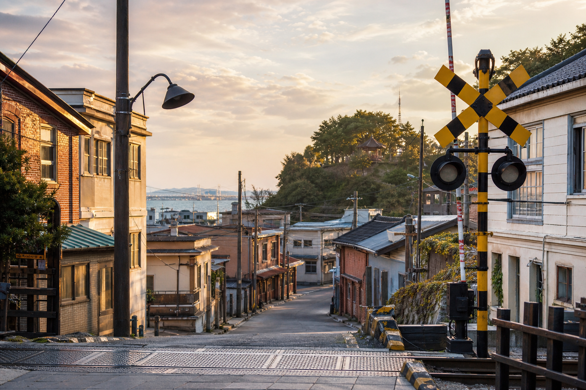
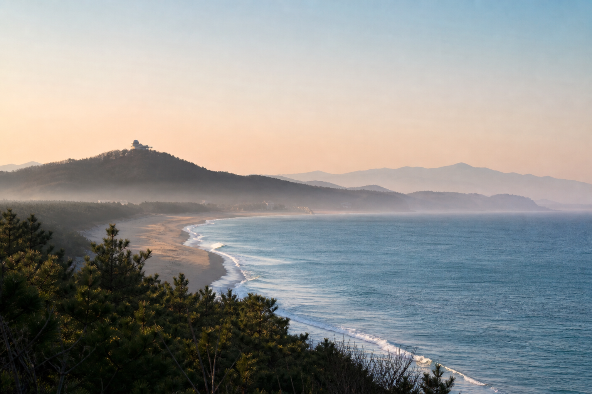
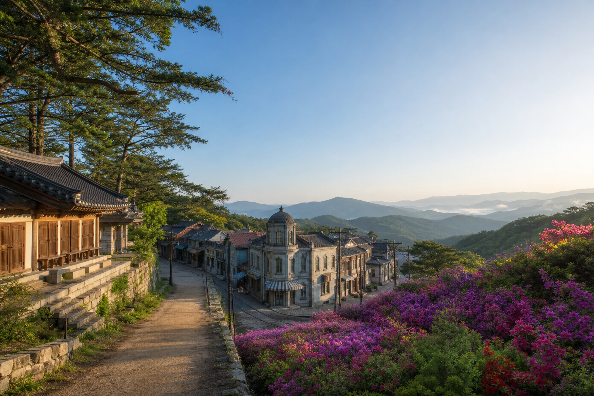
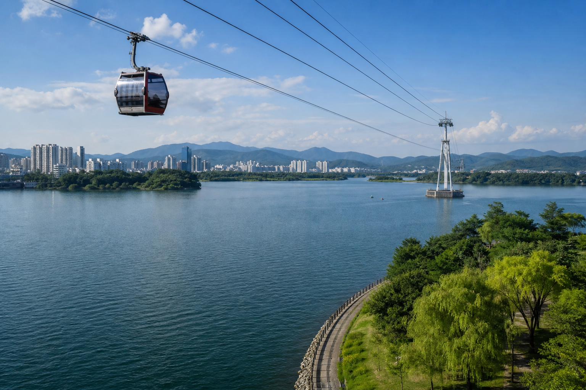
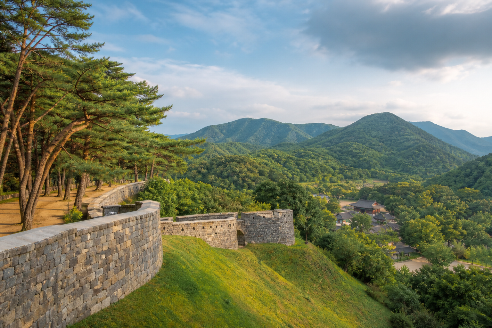

<!doctype html>
<html lang="ko">
  <head>
    <meta charset="utf-8" />
    <meta name="viewport" content="width=device-width, initial-scale=1" />
    <meta name="theme-color" content="#ffffff" />
    <meta name="google-adsense-account" content="ca-pub-5751319666030430" />
    <title>MustView Travel | ???????????????좊???諛⑸??/title>
    <meta name="description" content="???슱, ??€?? ???＜??€??媛뺣쫱???꾩＜源뚯?. 吏곸????좊?????????????빞湲곗? 紐⑹??吏? ?좎뵪, 吏€?? 諛붾???????뺣낫?????납????? ?뺤씤???꽭??" />
    <link rel="canonical" href="https://mustview.co.kr/" />
    <meta property="og:type" content="website" />
    <meta property="og:site_name" content="MustView Travel" />
    <meta property="og:title" content="MustView Travel | ???????????? />
    <meta property="og:description" content="蹂닿?? 嫄룰?? ??몃Ъ????? ??????뻾吏????꾪븳 ?몄쭛??????媛€????? />
    <meta property="og:url" content="https://mustview.co.kr/" />
    <meta property="og:image" content="https://mustview.co.kr/assets/og-travel.jpg" />
    <meta name="twitter:card" content="summary_large_image" />
    <link rel="preconnect" href="https://unpkg.com" />
    <link rel="stylesheet" href="https://unpkg.com/leaflet@1.9.4/dist/leaflet.css" integrity="sha256-p4NxAoJBhIIN+hmNHrzRCf9tD/miZyoHS5obTRR9BMY=" crossorigin="" />
    <link rel="stylesheet" href="travel.css?v=20260809-prose1" />
    <script async src="https://pagead2.googlesyndication.com/pagead/js/adsbygoogle.js?client=ca-pub-5751319666030430" crossorigin="anonymous"></script>
    <script type="application/ld+json">
      {
        "@context": "https://schema.org",
        "@type": "WebSite",
        "name": "MustView Travel",
        "url": "https://mustview.co.kr/",
        "inLanguage": "ko-KR",
        "description": "??????뻾吏? ???빞湲곗? ?좎뵪, 吏€?? 諛붾???????뺣낫?????났???뒗 ????????
      }
    </script>
  </head>
  <body class="travel-page">
    <a class="travel-skip" href="#main">蹂몃Ц 諛붾줈媛???/a>

    <div class="travel-utility" aria-label="????????궡">
      <div><span>???????????????/span><nav aria-label="???궡 硫붾??><a href="sources.html">????? ??쒖??/a><a href="contact.html">??몄??/a></nav></div>
    </div>

    <header class="travel-home-header">
      <div class="travel-home-navigation">
        <button class="travel-icon-button" id="travelMenuOpen" type="button" aria-label="?꾩껜 硫붾?????린" aria-haspopup="dialog" aria-controls="travelMenu" aria-expanded="false"><span aria-hidden="true">??/span></button>
        <nav class="travel-home-nav-side travel-home-nav-left" aria-label="??????섑??痢?>
          <a class="is-active" href="#editors">DESTINATION</a><a href="#picks">IDEA</a><a href="#travelGallery">IMAGE</a>
        </nav>
        <a class="travel-home-brand" href="#top" aria-label="MustView Travel ??><strong>MustView</strong><small>KOREA TRAVEL JOURNAL</small></a>
        <nav class="travel-home-nav-side travel-home-nav-right" aria-label="???????퉬??>
          <a href="beach.html">BEACH</a><a href="travel-guide.html">GUIDE</a><a href="about.html">ABOUT</a>
        </nav>
        <a class="travel-home-weather" href="#travelWeather" aria-label="吏€???좎뵪 ?뺤씤">?좎뵪</a>
      </div>
      <nav class="travel-home-mobile-nav" aria-label="紐⑤???移댄??怨좊??>
        <a class="is-active" href="#editors">DESTINATION</a><a href="#picks">IDEA</a><a href="#travelGallery">IMAGE</a><a href="beach.html">BEACH</a><a href="travel-guide.html">GUIDE</a><a href="about.html">ABOUT</a>
      </nav>
    </header>

    <dialog class="travel-menu" id="travelMenu" aria-labelledby="travelMenuTitle">
      <div class="travel-menu-panel">
        <div class="travel-menu-head"><div><span>MUSTVIEW TRAVEL</span><h2 id="travelMenuTitle">????硫붾??/h2></div><button id="travelMenuClose" type="button" aria-label="硫붾?????린">??/button></div>
        <nav aria-label="?꾩껜 ????硫붾??><a href="#editors">????????/a><a href="#picks">MustView Pick</a><a href="#latest">理쒖??????/a><a href="#destinations">紐⑹??吏? 李얘??/a><a href="#travelWeather">吏€???좎뵪</a><a href="#travelMapSection">????吏€??/a><a href="beach.html">諛붾?????/a><a href="destinations.html">????????媛€?????/a><a href="travel-guide.html">????以€??/a><a href="about.html">??????????</a><a href="privacy.html">媛쒖??뺣낫泥섎??諛??묠</a></nav>
      </div>
    </dialog>

    <main id="main" class="travel-main">
      <div id="top" aria-hidden="true"></div>

      <section class="travel-cover" id="editors" aria-labelledby="featureTitle">
        <div class="travel-cover-stage" id="travelCover" role="region" aria-roledescription="carousel" aria-label="MustView ????????>
          <div class="travel-cover-slides" aria-live="polite">
            <article class="travel-cover-slide is-active" data-cover-slide aria-hidden="false">
              <a href="busan-coast.html"><div class="travel-cover-copy"><span>DESTINATION ??BUSAN</span><h1 id="featureTitle">??€?? 諛붾??瑜??곕씪 泥쒖??????????뒗 ???（</h1><p>???젙????? ?????? 誘명룷源??. ???감?? ?곗콉?????뼱 ??€?????そ ???븞??????????蹂??????????땲??</p></div></a>
            </article>
            <article class="travel-cover-slide" data-cover-slide aria-hidden="true" hidden>
              <a href="seoul-jeongdong.html"><div class="travel-cover-copy"><span>IDEA ??SEOUL WALK</span><h2>????? 洹몄?????? ???슱 ?????湲몄??嫄룸??諛⑸??/h2><p>?뺣룞?????껌 二쇰?????諛⑺????줈 ?곌껐?????렐 ???뿉????€?????씠 嫄룸???꾩떖 ??????땲??</p></div></a>
            </article>
            <article class="travel-cover-slide" data-cover-slide aria-hidden="true" hidden>
              <a href="jeju-east.html"><div class="travel-cover-copy"><span>IMAGE ??JEJU</span><h2>???＜ ???そ, 硫€??媛€湲곕??????옒 蹂????????/h2><p>??留덉??????????諛붾??湲몄뿉 ??몃Ъ????????以꾩???????? ???＜ ???꽑??????????땲??</p></div></a>
            </article>
          </div>
          <button class="travel-cover-arrow travel-cover-prev" id="travelCoverPrev" type="button" aria-label="???쟾 ????????>??/button>
          <button class="travel-cover-arrow travel-cover-next" id="travelCoverNext" type="button" aria-label="???쓬 ????????>??/button>
          <div class="travel-cover-dots" role="group" aria-label="?????????좏깮"><button class="is-active" type="button" data-cover-index="0" aria-label="??€??????蹂닿?? aria-current="true"></button><button type="button" data-cover-index="1" aria-label="???슱 ????蹂닿?? aria-current="false"></button><button type="button" data-cover-index="2" aria-label="???＜ ????蹂닿?? aria-current="false"></button></div>
        </div>
      </section>

      <section class="travel-picks" id="picks" aria-labelledby="picksTitle">
        <div class="travel-section-title"><h2 id="picksTitle">MustView Pick</h2><a href="destinations.html">?꾩껜 ??뻾吏? 蹂닿??/a></div>
        <div class="travel-pick-grid" id="travelGallery">
          <article><a href="gangneung-sea.html"><span>媛뺤????媛뺣??/span><h3>????????????뿉??留뚮??????빐</h3><p>寃?????踰덉????쓣 ?좎떆 踰쀬뼱???꿸낵 ????????踰덉??嫄룸??諛섎?????붿????땲??</p></a></article>
          <article><a href="jeonju-hanok.html"><span>?꾨턿 ???꾩＜</span><h3>???????먮??湲??? ?꾩＜ ???삦???꾩묠</h3><p>???삦留덉??? ????????컙??媛€??李⑤????땲?? ??⑤???????옣???곌껐?????（?????옉??蹂댁???</p></a></article>
          <article><a href="suncheon-bay.html"><span>?꾨궓 ?????쿇</span><h3>???쿇留뚯???몄쓣??湲곕??由???諛⑸??/h3><p>媛덈?????湲됲?????????? ???????????????吏??????컙???곕씪 嫄룸????? ???썑 ??????땲??</p></a></article>
          <article><a href="seoul-jeongdong.html"><span>???슱 ???뺣룞</span><h3>???씪 ???곸뿉??媛€?ν?????슱 ?곗콉</h3><p>??以묎???????????옉????? ???젏?????Ⅴ?????븘 ?????, ?꾩떆?? ???????궗?????뒗 吏㏃? ??????땲??</p></a></article>
        </div>
      </section>

      <section class="travel-latest" id="latest" aria-labelledby="latestTitle">
          <div class="travel-section-title"><h2 id="latestTitle">Latest Journey</h2><a href="destinations.html">????????꾩껜蹂닿??/a></div>
          <div class="travel-latest-layout">
        <div class="travel-latest-list">
          <article><a href="pocheon-hantangang-sanjeonghosu.html"><div><span>경기 · 포천</span><h3>포천 한탄강 주상절리길과 산정호수로 이어지는 하루</h3><p>한탄강세계지질공원센터, 비둘기낭폭포, 한탄강 하늘다리, 산정호수를 공식 안내 기준으로 잇는 포천 하루 동선.</p></div></a></article>
          <article><a href="gunsan-time-travel-museum-railway.html"><div><span>전북 · 군산</span><h3>군산시간여행마을, 박물관에서 철길마을로 이어지는 하루</h3><p>군산근대역사박물관, 초원사진관, 동국사, 경암동 철길마을을 공식 안내 기준으로 잇는 군산 하루 동선.</p></div></a></article>          <article><a href="goseong-tongil-dmz-hwajinpo.html"><div><span>강원 · 고성</span><h3>통일전망대에서 화진포까지, 고성 북단 평화와 바다를 잇는 하루</h3><p>통일전망대, DMZ박물관, 화진포해양박물관을 공식 안내 기준으로 잇는 고성 하루 동선.</p></div></a></article>          <article><a href="samcheok-chogok-jangho-hwanseon.html"><div><span>강원 · 삼척</span><h3>초곡 용굴촛대바위길에서 장호항, 환선굴까지</h3><p>초곡 해안 데크, 장호항, 환선굴을 공식 안내 기준으로 잇는 삼척 하루 동선.</p></div></a></article>          <article><a href="hapcheon-haeinsa-hwangmaesan.html"><div><span>경남 · 합천</span><h3>해인사에서 영상테마파크, 황매산까지</h3><p>해인사, 합천영상테마파크, 황매산군립공원을 공식 안내 기준으로 잇는 합천 하루 동선.</p></div></a></article>
          <article><a href="yeongdeok-blue-road-jangsa-goraebul.html"><div><span>경북 · 영덕</span><h3>장사해수욕장에서 해맞이공원, 창포말등대, 고래불해수욕장까지</h3><p>장사해수욕장, 해맞이공원, 창포말등대, 고래불해수욕장을 공식 안내 기준으로 잇는 영덕 해안 하루 동선.</p></div></a></article>
          <article><a href="jeongseon-arirang-market-arihills-hwaam.html"><div><span>강원 · 정선</span><h3>정선아리랑시장에서 아리힐스 스카이워크와 화암동굴까지</h3><p>정선아리랑시장, 아라리촌, 아리힐스 스카이워크, 화암동굴을 공식 안내 기준으로 잇는 정선 하루 동선.</p></div></a></article>
          <article><a href="chuncheon-uiam-samaksan-gongjicheon.html"><div><span>강원 · 춘천</span><h3>공지천에서 의암호, 삼악산호수케이블카까지</h3><p>공지천 조각공원, 의암호, 삼악산호수케이블카, 춘천사이로248를 공식 안내 기준으로 잇는 춘천 하루 동선.</p></div></a></article><article><a href="taebaek-hwangji-coalmuseum-yongyeon.html"><div><span>강원 · 태백</span><h3>황지연못에서 태백고생대자연사박물관과 용연동굴까지</h3><p>황지연못, 태백고생대자연사박물관, 용연동굴을 공식 안내 기준으로 잇는 태백 하루 동선.</p></div></a></article>          <article><a href="wanju-samnye-bibijeong-daedunsan.html"><div><span>?? ? ??</span><h3>????????? ???, ?????</h3><p>?? ????, ??? ??, ??? ????? ?? ?? ???? ?? ?? ?? ??.</p></div></a></article>
          <article><a href="uljin-wangpicheon-mangyang-jeukbyeon.html"><div><span>경북 · 울진</span><h3>왕피천공원에서 망양정과 죽변항까지</h3><p>왕피천공원, 왕피천케이블카, 망양정, 죽변해안스카이레일, 죽변항을 공식 안내 기준으로 잇는 울진 하루 동선.</p></div></a></article>
          <article><a href="geoje-windy-hill-oedo-haegeumgang.html"><div><span>?? ?? ????</span><h3>????? ??????? ????????????</h3><p>????? ???, ?????, ???? ??????, ?????????? ???? ??? ???????? ??? ???? ???? ??? ????.</p></div></a></article>
          <article><a href="cheongsong-juwangsan-jusanji.html"><div><span>경북 · ????</span><h3>주왕??에??주산지까??, ??????바위?? 물을 ??루????는 ??/h3><p>주왕??의 계곡????봉, 주산지????면????버??을 공식 ??내 기????로 ??어 ??는 ???? ??루 ??행.</p></div></a></article>
          <article><a href="gochang-eupseong-seonunsa-ungeok.html"><div><span>?? ? ??</span><h3>?????? ???? ?????????</h3><p>??, ??, ??? ? ??? ?? ?? ??. ??? ??? ?? ??? ?? ??.</p></div></a></article>
          <article><a href="buan-chaeseokgang-naesosa.html"><div><span>??북 · 부??/span><h3>채석강에????소??까지, 부??변??반???? ??루????는 ??/h3><p>??물??채석?? 변??반??국립공?? ??소????나무숲길을 ????흡??로 ??어 ??는 부????루 코스.</p></div></a></article>
          <article><a href="iksan-mireuksa-wanggungri.html"><div><span>??북 · ??산</span><h3>미륵??????서 ??궁리유??과 보석박물관까??, ??산 백제 ??도????루</h3><p>미륵????, ??궁리유?? 백제??궁박물관, 보석박물관??공식 ??내 기????로 ??는 ??산 ??루 ??행.</p></div></a></article>
          <article><a href="yeongwol-cheongnyeongpo-jangneung-byeolmaro.html"><div><span>강원 · ??월</span><h3>??????에????릉??별마로천문??까??, ??월??물길??별빛????는 ??루</h3><p>?????? ??릉, 강????류??, 별마로천문????공식 ??내 기????로 ??? ??월 ??루 ??행.</p></div></a></article>
          <article><a href="miryang-yeongnamnu-wiyangji.html"><div><span>경남 · 밀??/span><h3>??남루에????양지까??, 밀??의 물과 ??간????라 걷는 ??루</h3><p>??남??????공원?? 밀??아리랑??장, ??양지??공식 ??내 기????로 ??는 밀????루 ??행.</p></div></a></article>
          <article><a href="danyang-dodam-mancheonha-jando.html"><div><span>충북 · ??양</span><h3>??담??봉??서 만천??스카이??크까??</h3><p>??담??봉, ??양????도, 만천??스카이??크, ??양개빛??널??공식 ??내 기????로 ??는 ??양 ??루 ??행.</p></div></a></article>
          <article><a href="sokcho-central-abaimaeul-cheongchoho.html"><div><span>강원 · ??초</span><h3>??초중앙??장??서 ??바??마??과 ??????까지</h3><p>??장, ????, ??향??마을, ??수 ??책????줄로 ??는 ??초 ??심 ??행.</p></div></a></article>
          <article><a href="taean-anmyeondo-kkotji-chollipo.html"><div><span>충남 · ??안</span><h3>??면??에??꽃????????천리??수목원??로 ??어지????루</h3><p>??면????연??양?? 꽃????수??장, 천리??수목원????줄로 ??는 ??해????행.</p></div></a></article>
          <article><a href="cheongsando-slow-road.html"><div><span>??남 · ??도</span><h3>??도??????????????로길까지, ??의 ??도??????????루</h3><p>??도???? ??????항, ??편??촬????, 범바?? ??흥리해??욕??을 공식 ??내 기????로 ??? ????행.</p></div></a></article>
          <article><a href="jindo-unnim-sebang-sinbi.html"><div><span>??남 · 진도</span><h3>??림??방??서 ??방??조?? ??비??바닷길까지 걷는 ??루</h3><p>진도???? ??림??방, ??비??바닷?? ??방??조??공식 ??내 기????로 ??? ??도 ????행.</p></div></a></article>
          <article><a href="yeosu-odongdo-dolsan-hyangilam.html"><div><span>??남 · ??수</span><h3>??동??에????일??까지, ??수 바다????라 걷는 ??루</h3><p>??동??방파?? ??수??상케??블?? ??산공원, ??일??을 공식 ??내 기????로 ??? ??해????행.</p></div></a></article>
          <article><a href="ganghwa-goryeogungji-jeondungsa-dongmak.html"><div><span>??천 · 강화</span><h3>강화 ??도??에????등???? ??막????까??</h3><p>고려궁??, ??창체험관, ??등?? ??막??????????흡??로 ??어 ??는 강화 ??행.</p></div></a></article>
          <article><a href="seocheon-janghang-skywalk-ecology.html"><div><span>충남 · ??천</span><h3>??항??림??림??장????태 ??시관????는 ??루</h3><p>??????태?? ??????양??물??원관, ??항??카??워???? ??줄로 ??는 ??천 ??행.</p></div></a></article>
          <article><a href="namwon-gwanghallu-yocheon.html"><div><span>??북 · ??원</span><h3>광한루원??서 ??천까??, ??원?????? 밤을 ??는 ??루</h3><p>광한루원, ??원??촌, ??천??태????공원????원????관??????흡??로 ??어 ??는 ??원 ??행.</p></div></a></article>
          <article><a href="namhae-german-darangyi.html"><div><span>경남 · ??해</span><h3>??일마을??서 ??랭??마??까지, ??해??바다????라 걷는 ??루</h3><p>??일마을????덕길과 ??랭??마??의 계단?? 물????안??로????루????어 ??는 ??해 ??행.</p></div></a></article>
          <article><a href="jinju-jinjuseong-namgang.html"><div><span>경남 · 진주</span><h3>진주??에????강까??, ???? 밤으??걷는 ??루</h3><p>진주?? ??강, ??등??시관????루?????? 걷는 진주 1????보 코스.</p></div></a></article>
          <article><a href="gangjin-dasan-baekryeonsa.html"><div><span>?꾨궓 ??媛뺤??/span><h3>???궛??덈?????? 諛깅?????吏? 嫄룸?????（</h3><p>???궛??덈?? 諛깅??? 留뚮????꿸만, 媛뺤????????, ???궡 ?????퉴吏€ ??????????줈 ??띠? 媛뺤??1????붿??</p></div></a></article>
          <article><a href="gongju-gongsanseong-jemincheon.html"><div><span>??⑸??????듭??/span><h3>??듭??깃낵 ???泥쒖?????（?????뒗 諛깆???꾩떆 ?곗콉</h3><p>??듭??? ??????뺣쫱???뺣쫱?? ????? ??듭????삦留덉?? ????怨듭＜諛뺣Ъ愿?????????????줈 ??띠? ??듭??1????붿??</p></div></a></article>
          <article><a href="jecheon-uirimji-cheongpung.html"><div><span>??⑸???????쿇</span><h3>???┝吏€?? ????몃컲?????（?????뒗 ?몄닔 ????/h3><p>???┝吏€, 移섏???꿸만, ??뭾臾명솕?좎궛???, ????몃컲??€?????移??? ??????????줈 ??띠? ???쿇 1????붿??</p></div></a></article>
          <article><a href="buyeo-baekje-gungnamji.html"><div><span>??⑸??????€??/span><h3>諛깆??臾명솕????? 沅곷궓吏??????（?????뒗 ?????곗콉</h3><p>沅곷궓吏?, 諛깆??臾명솕???, ???꽕, ????濡????감, 諛깅쭏媛????긽??€??묒????????????줈 ??띠? 諛깆??????</p></div></a></article>
          <article data-travel-theme="city nature tradition"><span>14</span><div><small>경남 · 밀??/small><h3>??남루에????양지까??</h3><p>강?? ??책????장 ??심, ??양지 ??????책????줄로 ??는 밀??1??코스.</p></div><a href="miryang-yeongnamnu-wiyangji.html" aria-label="밀????남루?? ??양지 ??행 보기">??/a></article>
          <article data-travel-theme="tradition nature"><span>15</span><div><small>?꾨궓 ??媛뺤??/small><h3>???궛??덈?????? 諛깅?????吏? 嫄룸?????（</h3><p>???궛??덈?? 留뚮??????넄?? 諛깅??? ????명?? 媛뺤????????????????????줈 ??띠? ???룄 ?곗콉 ??붿??</p></div><a href="gangjin-dasan-baekryeonsa.html" aria-label="媛뺤?????궛??덈????諛깅???????蹂몃Ц 蹂닿??>??/a></article>
          <article><a href="haenam-ttangkkeut-daeheungsa.html"><div><span>?꾨궓 ???????/span><h3>???걹?꾨?????? ???μ궗瑜????（?????뒗 ???룄 ???꽑</h3><p>???걹, ???μ?? ?????, ??以묎??? ???????퉴吏€ ??踰덉???뺣━???????1????붿????땲??</p></div></a></article>
          <article><a href="yeongju-buseoksa-sosuseowon.html"><div><span>寃쎈?????곸＜</span><h3>??€???궗?? ????????썝?????（?????뒗 議곗??????꽑</h3><p>?곗옄????같?????썝, ?좊퉬??뚯????踰덉????띠??嫄룸?????쟾???곸＜ 1????붿????땲?? ???????꽑???????? ???궗, ???????퉴吏€ ???퍡 ?뺣━???뒿???떎.</p></div></a></article>
          <article><a href="suwon-hwaseong-haenggung.html"><div><span>寃쎄???????썝</span><h3>?붿꽦?????????? 諛⑺????쪟?????吏€ ?깃낸?????옣?????뒗 ???（</h3><p>???썝?? ?붿꽦?????, ???━???만, ?붿꽦???감, ?붾떖??몄??μ????????????줈 ??띠? ?꾩떖??????</p></div></a></article>
          <article><a href="mokpo-modern-history-yudal.html"><div><span>?꾨궓 ??紐⑺??/span><h3>洹쇰???궗嫄곕━????? ?좊떖???꾨옒源뚯? 嫄룸?????（</h3><p>紐⑺??? 洹쇰???궗愿? 1????€, ?좊떖?? ???븰??? ??????????줈 ???뼱 ???뒗 ?꾩떖 ?곗콉 ??붿??</p></div></a></article>
          <article><a href="gyeongju-night-walk.html"><div><span>寃쎈????寃쎌??/span><h3>??? ?????뿉 ????????????寃쎌?????궡??/h3><p>????됱?? ???━???만, 泥⑥???, ?붿젙??먯? ???턿?????????諛⑺????줈 ???뒗 ???컙 ?곗콉.</p></div></a></article>
          <article><a href="ulsan-taehwagang-daewangam.html"><div><span>?몄궛 ??媛뺢??諛붾??/span><h3>???솕媛뺤??????뺤븫源뚯? ???（?????뒗 ?몄궛 ???꽑</h3><p>???솕??????뺤썝, ???솕?? ???뺤븫??듭?????踰덉????띠??嫄룰?????????꽌????쇱? ?뺣━????붿??</p></div></a></article>
          <article><a href="pohang-homigot-guryongpo.html"><div><span>寃쎈????????/span><h3>?????띔????щ！??? ???（?????뒗 諛붾???곗콉</h3><p>???텧 ??묒?? 洹쇰? 媛€?κ굅由? ????? ???옣????諛⑺????줈 ???뼱 嫄룸?????빐????붿??</p></div></a></article>
          <article><a href="damyang-bamboo.html"><div><span>?꾨궓 ?????뼇</span><h3>二쎈?????? ??€諛⑹??由? 硫????몄옘???븘湲몄?????뒗 ???（</h3><p>???? 媛뺣?, 媛€濡쒖??湲몄쓣 ??諛⑺????줈 ??띠??嫄룸?????뼇??????? ???꽑.</p></div></a></article>
          <article><a href="tongyeong-dongpirang-cablecar.html"><div><span>寃쎈?????????</span><h3>???뵾?묎낵 ??€?????移? 以묒????옣?????（?????뒗 ????? ??붿??/h3><p>?몃뜒??踰???? 諛붾???꾨??, ?꾪넻???옣, ????곕꼸??李⑤????곌껐???뒗 ?꾩떖????????땲??</p></div></a></article>
          <article><a href="andong-hahoe-byeongsan.html"><div><span>???룞 ???꾪넻?좎궛</span><h3>???쉶留덉????蹂묒????썝?????（?????뒗 ???룞 ???꽑</h3><p>??쇰???吏€????? ?좊꽕???퐫 ?멸??좎궛 ???썝?????퍡 蹂???? ????? 蹂댄??以묒??????룞 ??????땲??</p></div></a></article>
            <article><a href="jeju-east.html"><div><span>???＜ ????뻾怨꾪??/span><h3>???＜????? ???（ ???룞嫄곕━??以꾩??????뒗 ?????</h3><p>???そ?????そ?????궇?????湲곕?????吏€??????몃Ъ ??蹂댁???留덉??????꼍???꾩떎?곸씤 ?????湲곗?.</p></div></a></article>
            <article><a href="busan-coast.html"><div><span>??€????諛붾??/span><h3>???젙????? 誘명룷源??, 嫄룰??? ?????????뒗 ??/h3><p>???븞 ?꾩껜??????????쾶 嫄룹? ????????? ?곗콉?????????컙????諛⑺????줈 ?곌껐???뒗 諛섎?????붿??</p></div></a></article>
            <article><a href="beach.html"><div><span>???슜?뺣낫 ???좎뵪</span><h3>???????줈 ?좊굹????湲곗??蹂??????쇱? ????/h3><p>????? 諛붾?????꾩옣 ??????????퍡 ?뺤씤??????????뱀??諛붾?????젙??議곗????뒗 諛⑸??</p></div></a></article>
          </div>
          <aside class="travel-popular" aria-labelledby="popularTitle"><h3 id="popularTitle">留롮??李얜??????/h3><ol><li><a href="seoul-jeongdong.html"><span>01</span>???슱 ??????????컙 ?곗콉</a></li><li><a href="gangneung-sea.html"><span>02</span>媛뺣???붿댉?????빐 ????</a></li><li><a href="jeonju-hanok.html"><span>03</span>?꾩＜ ???삦????????꾩묠</a></li><li><a href="suncheon-bay.html"><span>04</span>???쿇???몄쓣 ???컙 ??좊??湲?/a></li><li><a href="tongyeong-dongpirang-cablecar.html"><span>05</span>????? ???뵾?묎낵 ??€?????移?/a></li><li><a href="travel-guide.html"><span>06</span>????????以€?????꽌</a></li></ol></aside>
        </div>
      </section>

      <section class="travel-destinations" id="destinations" aria-labelledby="destinationsTitle">
        <div class="travel-section-head compact"><div><span>FIND YOUR PLACE</span><h2 id="destinationsTitle">湲곕????줈 ??좊???????????/h2></div><p>????????????? ?먰븯???λ?????쇱? ??⑤??蹂??꽭??</p></div>
        <div class="travel-filter-bar" role="group" aria-label="????????? ?꾪꽣">
          <button class="is-active" type="button" data-travel-filter="all" aria-pressed="true">?꾩껜</button>
          <button type="button" data-travel-filter="sea" aria-pressed="false">諛붾??/button>
          <button type="button" data-travel-filter="city" aria-pressed="false">?꾩떆?곗콉</button>
          <button type="button" data-travel-filter="nature" aria-pressed="false">?????</button>
          <button type="button" data-travel-filter="tradition" aria-pressed="false">?꾪넻</button>
        </div>
        <p class="travel-filter-status" id="travelFilterStatus" aria-live="polite">여행지 16곳을 둘러볼 수 있습니다.</p>
        <div class="travel-destination-list">
          <article data-travel-theme="sea nature"><span>01</span><div><small>경북 · 영덕</small><h3>장사해수욕장에서 고래불해수욕장까지</h3><p>장사해수욕장, 해맞이공원, 창포말등대, 고래불해수욕장을 하루에 잇는 해안 동선.</p></div><a href="yeongdeok-blue-road-jangsa-goraebul.html" aria-label="영덕 블루로드와 고래불해수욕장 여행 보기">보기</a></article>
          <article data-travel-theme="sea city"><span>01</span><div><small>??€???????븞</small><h3>??€?????そ ???븞</h3><p>???????감, ?????곗콉, ??? ????????곌껐???뒗 ?꾩떆 諛붾??????</p></div><a href="busan-coast.html" aria-label="??€?????そ ???븞 ????蹂몃Ц 蹂닿??>??/a></article>
          <article data-travel-theme="city"><span>02</span><div><small>???슱 ???곗콉</small><h3>???슱 ??????????컙 ?곗콉</h3><p>沅곴?????옣?????옒????⑤??????뒗 ??以묎???以묒?????????붿??</p></div><a href="seoul-jeongdong.html" aria-label="???슱 ?곗콉 ????蹂몃Ц 蹂닿??>??/a></article>
          <article data-travel-theme="sea nature"><span>03</span><div><small>???＜ ??留덉??/small><h3>???＜ ???そ ???????/h3><p>李⑤????????以꾩??????留덉??????옒 ??몃Т??????? ???＜ ????</p></div><a href="jeju-east.html" aria-label="???＜ ???そ ????蹂몃Ц 蹂닿??>??/a></article>
          <article data-travel-theme="sea nature"><span>04</span><div><small>媛뺣??????/small><h3>媛뺣???붿댉??????</h3><p>???????洹몃???????빐?????룊?좎쓣 踰덇???留뚮???媛€踰쇱??嫄룰??</p></div><a href="gangneung-sea.html" aria-label="媛뺣???꿸낵 ???? ????蹂몃Ц 蹂닿??>??/a></article>
          <article data-travel-theme="city tradition"><span>05</span><div><small>?꾩＜ ????⑤??/small><h3>?꾩＜ ???삦?????옣</h3><p>???????⑤???곗콉 ????????옣源뚯? ???뼱吏€??留쏄??嫄댁??????（.</p></div><a href="jeonju-hanok.html" aria-label="?꾩＜ ???삦 ????蹂몃Ц 蹂닿??>??/a></article>
          <article data-travel-theme="nature"><span>06</span><div><small>???쿇 ?????</small><h3>???쿇??媛덈??? ?몄쓣</h3><p>??쇰??? ???ぐ ???컙?????퍡 ?뺤씤???빞 ?????留뚮???????뒗 ???꼍.</p></div><a href="suncheon-bay.html" aria-label="???쿇??????蹂몃Ц 蹂닿??>??/a></article>
          <article data-travel-theme="tradition nature"><span>07</span><div><small>???룞 ???좎궛</small><h3>???쉶留덉????蹂묒????썝</h3><p>媛뺢?????썝?????퍡 留뚮??????룞??????? ???（ ????</p></div><a href="andong-hahoe-byeongsan.html" aria-label="???룞 ???쉶留덉????蹂묒????썝 ????蹂몃Ц 蹂닿??>??/a></article>
          <article data-travel-theme="sea city tradition"><span>08</span><div><small>????? ???꾩떖 諛붾??/small><h3>???뵾?묎낵 ??€?????移?/h3><p>?몃뜒?????옣, ?꾨????????곕꼸?????뒗 ????? ?꾩떖?????（ ??붿??</p></div><a href="tongyeong-dongpirang-cablecar.html" aria-label="????? ???뵾?묎낵 ??€?????移?????蹂몃Ц 蹂닿??>??/a></article>
          <article data-travel-theme="city tradition"><span>09</span><div><small>寃쎌???????컙 ?곗콉</small><h3>??? ?????????????寃쎌?????궡??/h3><p>????됱???????━???만, 泥⑥???, ?붿젙?? ???턿???????李⑤??????뒗 ???곗콉.</p></div><a href="gyeongju-night-walk.html" aria-label="寃쎌?????궡?????컙 ?곗콉 ????蹂몃Ц 蹂닿??>??/a></article>
          <article data-travel-theme="city sea"><span>10</span><div><small>?몄궛 ??媛뺢??諛붾??/small><h3>???솕媛뺤??????뺤븫源뚯? ???（</h3><p>?꾩떖???뺤썝, 媛뺣? ?꾧컖, ???븞 ???꼍????踰덉????띠?????뒗 ?몄궛 ???（ ???꽑.</p></div><a href="ulsan-taehwagang-daewangam.html" aria-label="?몄궛 ???솕媛뺢?????뺤븫 ???（ ????蹂몃Ц 蹂닿??>??/a></article>
          <article data-travel-theme="city tradition sea"><span>11</span><div><small>紐⑺?????????곗콉</small><h3>洹쇰???궗嫄곕━????? ?좊떖???꾨옒源뚯?</h3><p>紐⑺??? 洹쇰???궗愿?, ?좊떖?? ???븰??? 李⑤??????뒗 ????꾩떆 ?곗콉?????（.</p></div><a href="mokpo-modern-history-yudal.html" aria-label="紐⑺??洹쇰???궗嫄곕━?? ?좊떖??????蹂몃Ц 蹂닿??>??/a></article>
          <article data-travel-theme="city tradition"><span>12</span><div><small>???썝 ???깃낸?????옣</small><h3>?붿꽦?????????? 諛⑺????쪟?????吏€ 嫄룸?????（</h3><p>???썝?? ?붿꽦?????, ???━???만, ?곕???, ?붾떖??몄??μ????諛⑺????줈 ???뒗 ?꾩떆??????</p></div><a href="suwon-hwaseong-haenggung.html" aria-label="???썝 ?붿꽦????????깃낸 ?곗콉 ????蹂몃Ц 蹂닿??>??/a></article>
          <article data-travel-theme="tradition city nature"><span>13</span><div><small>??€????諛깆???좎쟻</small><h3>諛깆??臾명솕????? 沅곷궓吏??????（?????뒗 ?????곗콉</h3><p>沅곷궓吏?, 諛깆??臾명솕???, ????濡????감, 諛깅쭏媛????긽??€??묒??李⑤?????띕????€????諛깆??????</p></div><a href="buyeo-baekje-gungnamji.html" aria-label="??€??諛깆??臾명솕????? 沅곷궓吏? ????蹂몃Ц 蹂닿??>??/a></article>
        </div>
      </section>

      <section class="travel-live" aria-label="?????좎뵪?? 吏€??>
        <div class="travel-weather" id="travelWeather" aria-labelledby="weatherTitle">
          <div class="travel-section-head compact"><div><span>TRAVEL WEATHER</span><h2 id="weatherTitle">?좊굹????吏€???좎뵪</h2></div></div>
          <form class="travel-weather-form" id="travelWeatherForm"><label for="travelWeatherPlace">??뻾吏?</label><select id="travelWeatherPlace"><option value="37.5665,126.9780,???슱">???슱</option><option value="35.1796,129.0756,??€?? selected>??€??/option><option value="33.4996,126.5312,???＜">???＜</option><option value="37.7519,128.8761,媛뺣??>媛뺣??/option><option value="35.8242,127.1480,?꾩＜">?꾩＜</option><option value="34.9506,127.4872,???쿇">???쿇</option></select><button type="submit">?좎뵪 ?뺤씤</button></form>
          <div class="travel-weather-state" id="travelWeatherState" aria-live="polite"><div class="travel-weather-main"><span id="travelWeatherName">??€??/span><strong id="travelTemperature">--??/strong><p id="travelWeatherText">?꾩옱 ?좎뵪???뺤씤????????뒿???떎.</p></div><dl><div><dt>泥닿??/dt><dd id="travelFeelsLike">-</dd></div><div><dt>???룄</dt><dd id="travelHumidity">-</dd></div><div><dt>媛뺤??/dt><dd id="travelRain">-</dd></div><div><dt>諛붾??/dt><dd id="travelWind">-</dd></div></dl></div>
          <p class="travel-data-note">?좎뵪????쒕??以€????? ?꾪븳 李멸???뺣낫???땲?? 湲곗??밸낫?? ?꾩옣 ???궡?????퍡 ?뺤씤???꽭??</p>
        </div>

        <div class="travel-map-section" id="travelMapSection" aria-labelledby="travelMapTitle">
          <div class="travel-section-head compact"><div><span>TRAVEL MAP</span><h2 id="travelMapTitle">?????꾩떆 ????吏€??/h2></div><button id="travelMapReset" type="button">?꾧뎅 蹂닿??/button></div>
          <div class="travel-map" id="travelMap" aria-label="MustView ??붿????????뻾吏? 吏€??></div>
          <p class="travel-data-note">吏€?? OpenStreetMap. 留덉빱瑜??좏깮???㈃ ??뻾吏? ?붿빟???뺤씤???????뒿???떎.</p>
        </div>
      </section>

      <section class="travel-tools" id="tripTools" aria-labelledby="toolsTitle">
        <div class="travel-section-title"><h2 id="toolsTitle">????????젣??以€????????/h2><a href="travel-guide.html">以€??媛€?????/a></div>
        <div class="travel-tool-grid">
          <a class="travel-tool-primary" href="beach.html"><span>SEA TRIP</span><h3>???닔?뺤옣 ?좎뵪?? 諛붾???곹깭</h3><p>?꾧뎅 二쇱?????????꾩튂, ?꾩옱 ?좎뵪, ????? ???삩??二쇰? ??뻾吏?????쒕???꾩뿉 ?뺤씤???땲??</p><strong>諛붾????????린 ??/strong></a>
          <article><span>01</span><h3>????????컙????쇱? ??꾩????린</h3><p>媛€????? ?μ??蹂???????젣 ????????꽑????쇱? ?뺥븯??吏㏃? ???????諛붾??吏묐땲??</p></article>
          <article><span>02</span><h3>?좎뵪??諛붾??????????吏? 蹂닿??/h3><p>湲곗??留?蹂댁? 留먭??媛뺤??? ???컙???냽?????????컖?????퍡 ?뺤씤???꽭??</p></article>
          <article><span>03</span><h3>?꾩옣 ???쁺 ?뺣낫 ???떆 ?뺤씤???린</h3><p>???Т?? ???옣 留덇?? 二쇱??? ??以묎???留됱?????쒕??吏곸?????듭?????궡???뺤씤???땲??</p></article>
        </div>
      </section>

      <section class="travel-notes" aria-labelledby="notesTitle">
        <div class="travel-section-head compact"><div><span>EDITORIAL NOTE</span><h2 id="notesTitle">MustView媛€ ??뻾吏?????좊???湲곗?</h2></div></div>
        <div><p>???????μ??濡????굹??紐낆??蹂????嫄룸?????컙, ?????μ?? ?????諛⑸???????????읇?????뼱吏€????????곗꽑???땲?? ????????뒗 ???꽑?? 吏곸????????꾪????몄슱 ??寃€?좏븷 ?????룄???꾩튂?? ????? ??????????퍡 ???챸???땲??</p><p>???쁺 ???컙?????????? ????吏??????뒿???떎. ??????吏€?????쨌愿???묒?쨌湲곗긽????理쒖????듭?????궡???뺤씤????? ?좎뵪媛€ ??뗭? ???쓣 ????? ???젙??以꾩??嫄곕굹 ???궡 ???꽑???줈 諛붽???몄슂.</p></div>
      </section>
    </main>

    <nav class="travel-bottom-nav" aria-label="紐⑤???二쇱??硫붾??><a href="#top"><span aria-hidden="true">??/span><strong>??/strong></a><a href="#destinations"><span aria-hidden="true">??/span><strong>??뻾吏?</strong></a><a href="#travelWeather"><span aria-hidden="true">??/span><strong>?좎뵪</strong></a><a href="beach.html"><span aria-hidden="true">??/span><strong>諛붾??/strong></a></nav>

    <footer class="travel-footer"><div><a class="travel-footer-brand" href="#top">MustView</a><p>???????????泥쒖???蹂닿?? ???꾩떎?곸쑝??以€?????????????????????떎.</p></div><nav aria-label="???떒 硫붾??><a href="destinations.html">??뻾吏?</a><a href="travel-guide.html">????以€??/a><a href="sources.html">????? ??쒖??/a><a href="about.html">?????</a><a href="contact.html">??몄??/a><a href="privacy.html">媛쒖??뺣낫泥섎??諛??묠</a></nav><small>?좎뵪쨌吏??꽷룰????뺣낫??李멸????엯???떎. ???쁺 ?????쟾 ?뺣낫????듭??湲곌????꾩옣 ???궡???곗꽑???꽭??</small></footer>

    <script src="https://unpkg.com/leaflet@1.9.4/dist/leaflet.js" integrity="sha256-20nQCchB9co0qIjJZRGuk2/Z9VM+kNiyxNV1lvTlZBo=" crossorigin=""></script>
    <script src="travel-dashboard.js?v=20260807-travel1"></script>
  </body>
</html>
